inne stare zdjęcia
A na tej stronie przezentuję inne stare zdjęcia związane tematycznie z Krzeszowem ale nie pasujące do żadnej z wcześniejszych podziałów.
| 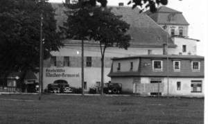 | Widok na dzisiejszą "Pokusę". |
| 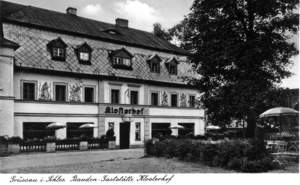 | Widok na dziesiejszy budynek GOK. |
| 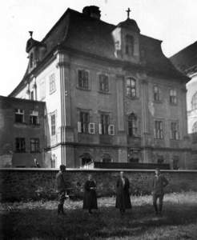 | Dom Opata. |
| 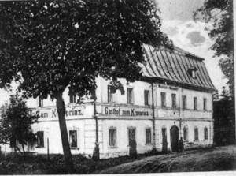 | Tutaj dzisiejszy sklep "GS". (dodano 22-04-2007: to nie jest budynek sklepu GS a budynek GOK, choć wydaje się być inaczej. Do tego budynku w późniejszym czasie dobudowano pozostałą część, więc wygląda on dziś całkiem inaczej) |
| 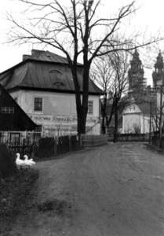 | Tutaj ten sam sklep. |
| 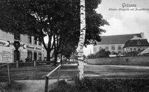 | I kolejne, trzecie zdjęcie tego samego sklepu. |
| 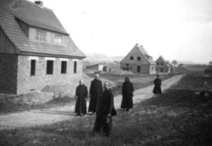 | Budowa krzeszowskiego "Osiedla". |
| 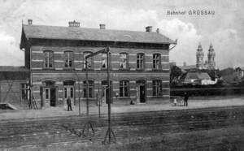 | Stacja kolejowa. Trzeba przyznać, że na tym zdjęciu budynek przeztuje się bardzo ładnie. Niestety, dzisiaj już tak ładnie nie wygląda ... |
| 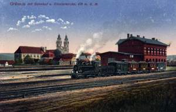 | Kolorowana pocztówka również przedstawiająca stację. |
| 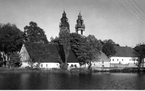 | Widok na centrum Krzeszowa. |
| 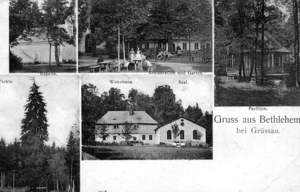 | Kartka z "Betlejem". |
| 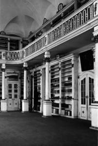 | Wnętrze biblioteki klasztornej. |
| 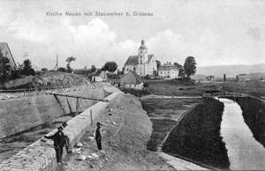 | Budowa tamy w Krzeszówku. |
| 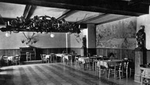 | Wnętrze "Pokusy". |
| 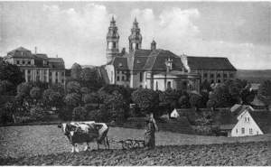 | Widok Krzeszowa od strony św. Anny. |
| 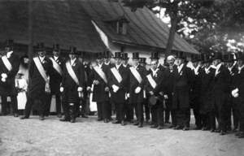 | A tutaj sam nie wiem co zdjęcie przedstawia. dodano 26-09-2013: Zdjęcie przestawia zjazd szlachty śląskiej. Urządzano takie od 1925r. do czasu II wojny światowej. (informacja za Silesiusxpp) |

{kind=link}
{kind=link}
{kind=link}
{kind=link}
{kind=link}
{kind=link}
{kind=link}
{kind=link}
{kind=link}
{kind=link}
{kind=link}
{kind=link}
{kind=link}
{kind=link}
{kind=link}
{kind=link}